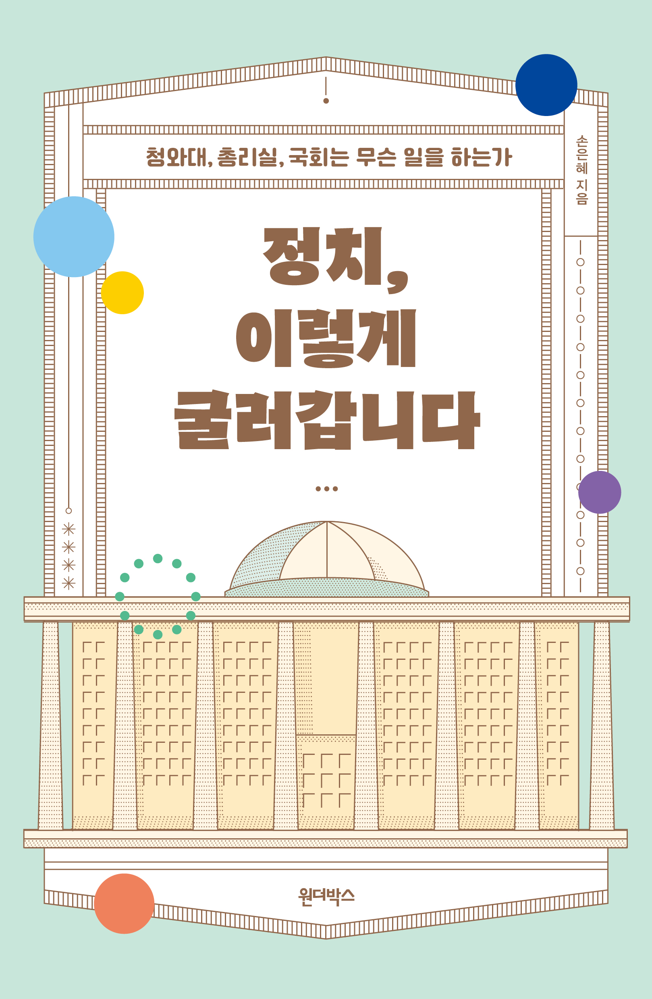
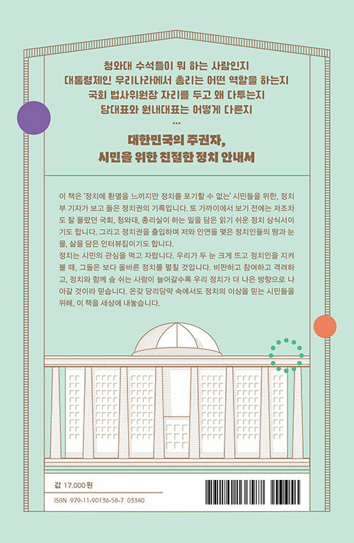

정치, 이렇게 굴러갑니다
청와대, 총리실, 국회는 무슨 일을 하는가
손은혜 지음


2021.11.18. 출간 / 320쪽 / 137*210mm / 무선 / 사회과학
뉴스에 매일 등장하는 정치인들은 무슨 일을 할까?
대한민국의 주권자, 시민을 위한 친절한 정치 안내서!
감염병이 유행하고 부동산 광풍이 몰아치던 시기, 정치부에 새로 배치받은 저자는 국회와 청와대, 총리실을 취재한다. 학부와 대학원에서 정치학을 공부했기에 어느 정도의 정치 상식은 갖추고 있다고 생각한 것도 잠시, 막상 취재를 시작하니 정치권이 어떻게 굴러가고 있는지 제대로 알지 못했음을 깨닫는다. 국회에서 열리는 수많은 회의에는 누가 참석해서 어떤 말을 쏟아 내는지, 21대 국회 개원 이후 여야는 국회 법사위원장을 두고 왜 그렇게 날 선 반응을 보였는지, 청와대 수석들은 무슨 일을 하는지, 대통령제인 우리나라에서 국무총리는 어떤 역할을 하는지…. 정치의 실상을 취재하기 위해서는 모르는 것을 다시 공부해 습득하고, 의원실을 비롯한 취재처의 문을 두드리며 최대한 다가가 질문하는 수밖에 없었다.
법 하나 만들기 위해 벌어지는 수많은 논의의 현장을, 누군가는 단식까지 불사하는 모습을 보았다. 코로나19 유행 속에서 방역 조치와 피해 지원을 두고 고심하는 사람들을 만났다. 천정부지로 치솟는 부동산 가격을 잡기 위한 정책을 두고 갈등하는 정치권을 취재했다. 그 생생한 정치의 과정을 지켜본 저자는 가까이에서 들여다보기 전에는 몰랐던 청와대와 총리실, 국회가 하는 일을 소개하는 이 책을 펴냈다. 국회의원, 국회 보좌관, 국무조정실장, 청와대 전 수석과 비서관 등 열한 명의 정치인 및 관료와 나눈 생생한 인터뷰는 정보의 깊이를 더했다.
좋은 정치는 좋은 사회를 만드는 초석이며, 좋은 정치인은 결국 시민들의 손으로 뽑는다. ‘비판하고 참여하고 격려하고, 이렇게 정치와 함께 숨 쉬는 사람이 늘어 갈수록 우리 정치가 더 나은 방향으로 나아갈 것’이라 믿는 저자의 소망이 이 책을 통해 전달되기를 바란다.